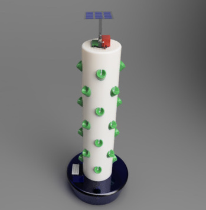

Aquasustain
SKILLS & KNOWLEDGE
- 3D Design in Fusion 360
- Stress & Displacement Simulations
- Python Coding
- Circuit Design with Raspberry Pi
3d modeling
AquaSustain uses the concept of vertical farming in order to maximize the amount of water that can be saved during farming. This innovative product involves growing crops in vertical layers using water saving techniques, known as aeroponics. This technology uses a nutrient enriched spray mist as a method to sustain the growth, that can massively reduce the amount of clean water currently being used for agriculture.
Download a .f3d CAD file from my GitHub page.
system diagram
Twelve 0.025-inch orifice nozzles at 80-100 PSI generate extremely tiny droplets between 10-50 microns, which is the most suitable size to absorb oxygen in it for the plant roots to be effectively grown. The water pressure, 80-100 PSI can be kept by the Accumulator tank and the pressure switch, and the solenoid valve and the float valve can be controlled and managed by the Raspberry Pi board, powered by the solar panel over the 10 Ah battery.
Water Circulation and Consumption
Each 0.025-inch orifice nozzle should deliver droplets at a rate of 2.37 ml per second at 80 to 100 PSI. If the system runs on 12 nozzles for 5 seconds every 5 minutes, 40 L of water is delivered a day.
A Smart Irrigation Control
The amount of water required strongly depends on the type of crop and the growing conditions. Therefore, it is crucial for users to flexibly control the amount of water used. The irrigation controller using Raspberry Pi and solenoid valve allows users to set up the opening and closing interval of the water valve.
Valve control with Raspberry Pi
Solenoid valve can be controlled by Raspberry Pi board and the circuit, driven by Python code below.
A Realtime Water Monitoring
40 L of water are supplied a day and 5 L of them are consumed for the plants and an evaporation from the system. Therefore, the water level gets lower as the time passes, and the float valve is activated to fill the water tank like a toilet tank. The water flow meter sends the data to Raspberry Pi when the water runs, which allows a user to analyze the actual water consumption.

Stress & Displacement Simulations
Aquasustain
June 2020, Undergraduate Project
This product is developed for the engineering sustainable development competition, called Grand Challenge.
I am tasked to investigate engineering solutions with other 7 team members as a Technical Specialist for clean water and sanitation in the year 2040.
This product won the Industry Award 2020.
My main role is to:
- make a 3D model of the product
- design electric circuits
- produce a Python code for
- the irrigation control
- the water flow calibration
Get in Touch!
If you have any questions, please feel free to drop me a line. if you don't get an answer immediately, I'll get back to you as soon as I can.